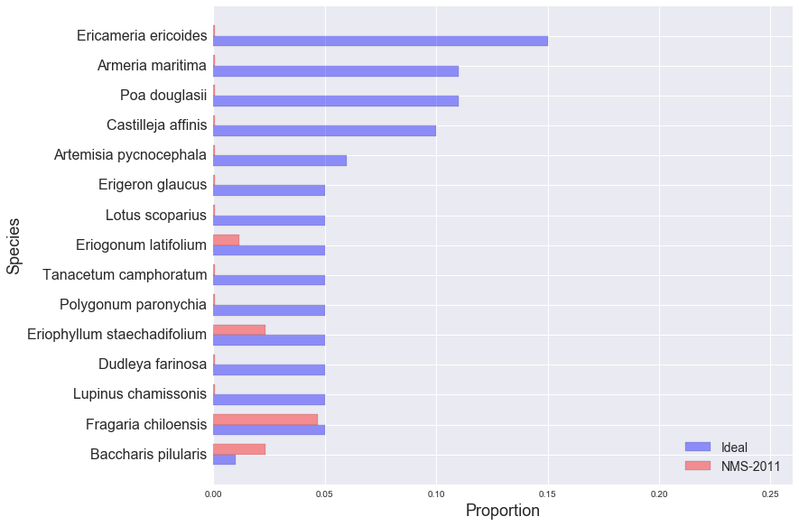

golden gate national parks conservancy: scrub mix
NMS-2011
EAPO-2011
NMS-2010
NMS-2011
NMS-2012
NUWO-2010
NUWO-2011
NUWO-2012
SUDU-2008
SUDU-2009
SUDU-2010
SUDU-2011
SUDU-2012
Ideal and Observed Scrub Mix, NMS-2011:
Other Species in NMS-2011 Sample:
| Species | Observed % |
|---|---|
| Bare ground | 17.06% |
| Lolium sp. | 15.29% |
| Bromus diandrus | 10.59% |
| Claytonia perfoliata | 7.06% |
| Avena sp. | 4.12% |
| Scrophularia californica | 4.12% |
| Anthriscus caucalis | 2.94% |
| Gnaphalium stramineum | 2.94% |
| Madia sativa | 2.94% |
| Achillea millefolium | 2.94% |
| Hordeum sp. | 2.35% |
| Briza maxima | 2.35% |
| Stellaria media | 1.76% |
| Medicago polymorpha | 1.18% |
| Cupressus macrocarpa | 1.18% |
| Fumaria parviflora | 1.18% |
| Mimulus aurantiacus | 1.18% |
| Ceanothus thyrsiflorus | 0.59% |
| Gnaphalium luteo-album | 0.59% |
| Lupinus arboreus | 0.59% |
| Conyza sp. | 0.59% |
| Cirsium occidentale | 0.59% |
| Phalaris paradoxa | 0.59% |
| Tree stump | 0.59% |
| Anaphalis margaritacea | 0.59% |
| Lotus strigosus | 0.59% |
| Poa annua | 0.59% |
| Vulpia sp. | 0.59% |
| Artemisia californica | 0.59% |
| Juncus bufonius | 0.59% |
| Galium aparine | 0.59% |